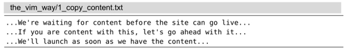
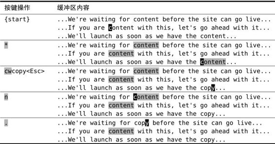

）。
）。技巧5查找并手动替换
Vim提供了一个:substitute 命令专门用于查找替换任务，不过用上面介绍的技术，我们也可以手动修改第一处地方，然后再一个个地查找替换其他匹配项。. 命令可以把我们从繁重的工作中解放出来，而即将登场的另一个有用的单键命令，则能够让我们方便地在匹配项间跳转。
在下面这段文本中，每一行都出现了单词“content”：

假设我们想用单词“copy”（意义同“copywriting”）来替代“content”。也许你会想，这太简单了，只要用替换命令就行了，像下面这样：
➾:%s/content/copy/g
但是，且慢！如果我们运行上面这条命令，就会出现“If you are ‘copy’ with this,”这样的句子，这很荒唐！
之所以会有这种问题，是因为“content”一词有两种含义，一个是“copy”的同义词（发音为'kon'tεnt），另一个是“happy”的同义词（发音为kən'tent）。用专业的话说，我们是在处理拼写相同，但含义和发音都不同的词。不过这不是我想说的重点，重点是我们一定要小心每一步操作。
我们不能想当然地用“copy”替换每一个“content”，而是要时刻留神，对每个地方都要问“这里要修改吗？”，然后回答“修改”或者“不改”。substitute 命令也能胜任这项工作，我们将在技巧89中学到该怎么做。不过现在，我们将寻求符合本章主题的另一种解决办法。
偷懒的办法：无需输入就可以进行查找
现在你可能已经猜到了，. 命令是我最喜爱的Vim单键命令，而排在第二位的是* 命令，此命令可以查找当前光标下的单词（参见:h * ）。
我们可以调出查找提示符，并输入完整的单词来查找 “content”：
➾/content
或者，我们可以简单地把光标移到这个单词上，然后按 * 键。以下面的操作为例：

刚开始，我们把光标移到单词“content”上，然后使用 * 命令对它进行查找，你也可以自己试一下。这会产生两个结果：一是光标会跳到下一个匹配项上，二是所有出现这个词的地方都会被高亮显示出来。如果你并没有看到高亮，试着运行一下 :set hls。要了解更多这方面的内容，请参见技巧80。
执行过一次查找“content”的命令后，现在我们只需按 n 键就可以跳到下一个匹配项。在本例中，按 *nn 会遍历完所有的匹配项，从而跳回到本次查找的起点。
使修改可重复
当光标位于“content”的开头时，我们就可以着手修改它。这包括两步操作：首先要删除单词“content”，然后输入替代的单词。cw命令会删除从光标位置到单词结尾间的字符，并进入插入模式，接下来我们就可以输入单词“copy”了。Vim会把我们离开插入模式之前的全部按键操作都记录下来，因此整个 cwcopy<Esc> 会被当成一个修改。也就是说，执行 . 命令会删除从光标到当前单词结尾间的字符，并把它修改为“copy”。
合而为一
万事俱备！每次我们按 n 键时，光标就会跳到下一个“content”单词所在之处，而当我们按 . 键时，它就会把光标下的单词改为“copy”。
如果我们想替换所有地方，就可以不加思考地一直按 n.n.n. 以完成所有的修改（但是，这种情况下也可以用 :%s/content/copy/g 命令）。然而，由于我们需要留意不符合要求的匹配项，所以在按了 n 之后，我们要审视一下当前的匹配项，然后决定是否把它改为“copy”。如果需要修改的话，就按 . 命令，反之则不用。无论决定是什么，我们都可以再次按 n 移到下一个地方，如此循环往复，直到完成全部的修改。